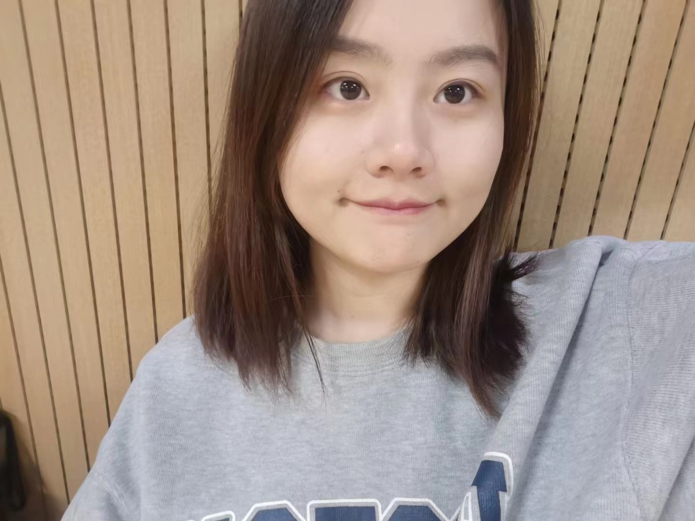
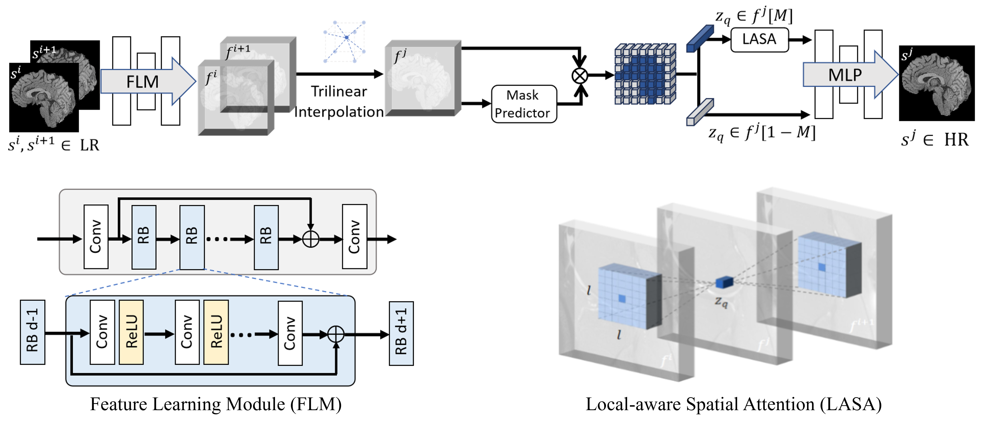
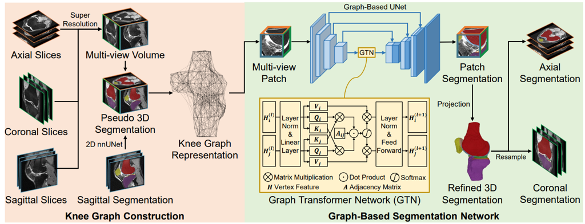
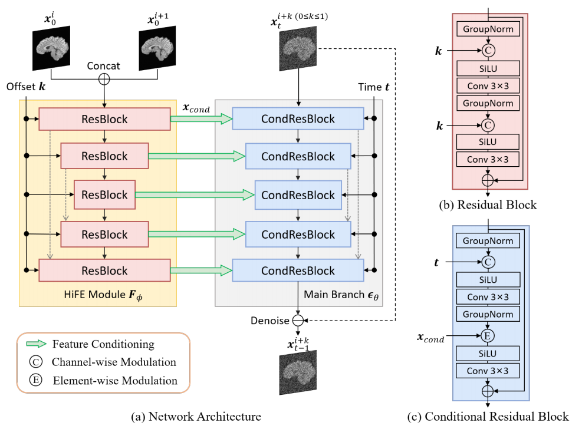
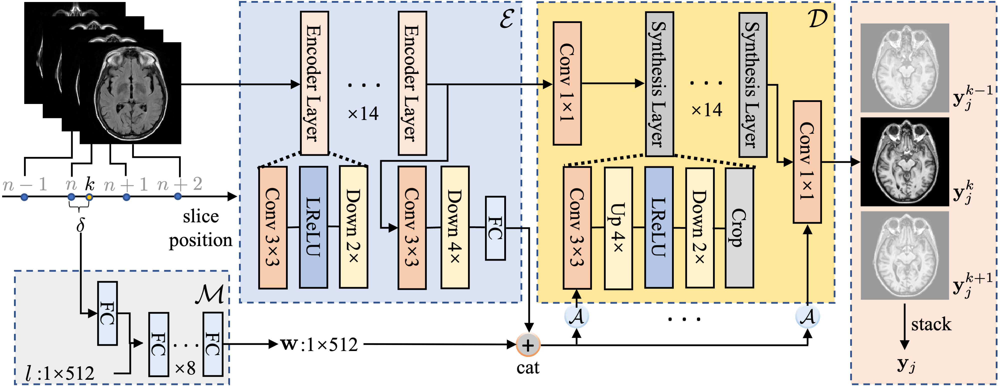

Xin Wang「王欣」Master Student
Medical Image Computing Lab (MIC Lab) |
 |
Biography [CV]
M.S. in Biomedical Engineering, Shanghai Jiao Tong University, China, Sep 2021 - Mar 2024 (expected),
advised by Prof. Qian Wang
B.S. in Computer Science and Engineering, Shanghai University, China, Sep 2017 - Jun 2021
Research Interests
I focus on interdisciplinary researches at medical image analysis and artificial intelligence, for the sake of smart diagnosis and prognosis and individualized therapy planning and tracking. My research draws from the following different domains.
Medical image enhancement: MRI super-resolution and its integration with downstream task.
Cytopathological image diagnosis: Abnormal-cell detection and classification.
Publications [Google Scholar]
|  | Spatial Attention-based Implicit Neural Representation for Arbitrary Reduction of MRI Slice Spacing. Xin Wang*, Sheng Wang*, Honglin Xiong, Kai Xuan, Zixu Zhuang, Mengjun Liu, Zhenrong Shen, Xiangyu Zhao, Lichi Zhang, Qian Wang. Medical Image Analysis. Major Revision |
|  | CAS-Net: Cross-view Aligned Segmentation by Graph Representation of Knees. Zixu Zhuang, Xin Wang*, Sheng Wang, Zhenrong Shen, Xiangyu Zhao, Mengjun Liu, Zhong Xue, Dingang Shen, Lichi Zhang, Qian Wang. Medical Image Computing and Computer Assisted Intervention (MICCAI), 2023. [paper] |
|  | Arbitrary Reduction of MRI Inter-slice Spacing Using Hierarchical Feature Conditional Diffusion. Xin Wang*, Zhenrong Shen*, Zhiyun Song, Sheng Wang, Mengjun Liu, Lichi Zhang, Kai Xuan, Qian Wang. International Workshop on Machine Learning on Medical Imaging (MLMI), 2023. [paper] |
|  | Alias-Free Co-Modulated Network for Cross-Modality Synthesis and Super-Resolution of MR Images. Zhiyun Song, Xin Wang, Xiangyu Zhao, Sheng Wang, Zhenrong Shen, Zixu Zhuang, Mengjun Liu, Qian Wang, Lichi Zhang. Medical Image Computing and Computer Assisted Intervention (MICCAI), 2023. [paper] |
Teaching Assistant
| 2022-2023 | Fall | Data Structure |